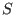
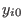
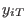
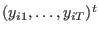
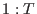

Next: 動物実験データの解析 Up: 経時的繰り返し測定デザイン Previous: 経時的繰り返し測定デザイン
本書では，定常性が仮定できるベースライン期間に
回，定常性が仮定できる治療効果の評価期間（治療期間の一部）に 回の繰り返し測定を行う「
回の繰り返し測定を行う「 デザイン」を究極のデザインと考える。
デザイン」を究極のデザインと考える。
しかし，現実的には と だけ用いる「 デザイン」や， と  だけ用いる「 デザイン」が一般的である。
「 デザイン」では，LOCF last observation carried forwardが生じる。
本書では，「 デザイン」をもとに解説を進める。
Taichi Okumura